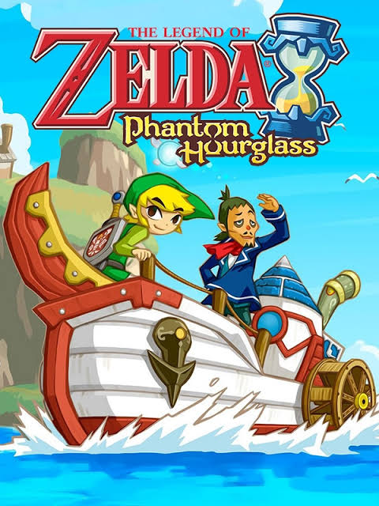
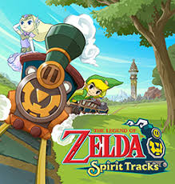

Nom du jeu 1 (date de sortie)
Informations et présentation du jeu 1.

Signature de Lohan
Informations et présentation du jeu 1.

Informations et présentation du jeu 2.

Informations et présentation du jeu 3.

Informations et présentation du jeu 4.

The Legend of Zelda : The Wind Waker
est un jeu sorti en 2003 sur Gamecube et développé par Nintendo. On y suit un jeune homme nommé Link, qui lors de ses 12 ans suit une tradition de son île natale "L'Île de L'aurore".
Il se revêtit donc de la tenue de la légende d'antan : "Le Héros du Temps" Il y vit, en sortant de la maison de sa grand-mère
, des pirates tirant sur un oiseau géant, relâchant à l'impact une jeune fille tombée dans la forêt de l'île.
Link se mit donc avec Gonzo, un pirate cherchée cette personne, qui se nomme Tetra. Mais alors qu'il sortait de la forêt avec Gonzo et Tetra sauvée, il y vit sa petite sœur se faire enlever par un oiseau obéissant à Ganondorf.
Determiné à retrouver sa sœur, Link retrouva donc les pirates, dirigés par Tetra, la fille qu'il a sauvé, et se mit à la recherche de sa soeur, dans une aventure plus qu'épique.
Ils atteignent la forteresse Maudite mais se font malheureusement propulsé leurs grands-mères dans l'océan. Et c'est ici que Link fait la plus grande rencontre de son Aventure
Le Lion Rouge, anciennement l'ancien Roi d'Hyrule, sauve Link, et c'est ainsi qu'ils se mettent dans une grande épopée icroyable.
Ils partèrent chercher sur plusieurs îles, les perles des Déesses : Nayru, Din et Farore.
c'est ensuite en haut d'un clocher qu'il sonna la cloche, pour retourner dans l'ancien Hyrule figé dans le temps. C'est ici qu'il trouve la Master Sword, une arme qui servait de clé
pour sceller Hyrule au fond de l'océan.
Après être retourné dans son monde, Link part sauver sa soeur, prisonière dans la forteresse maudite. Mais il tombe en face de Ganondorf, qui comme par hasard était là. Avec Tetra, ils essayèrent de vaincre Ganondorf.
Il terrassa les deux héros, et se font sauver in-extremis par Valoo, Scaff et Taf. Le Lion Rouge guida donc les deux vaincus, dans l'aancien Hyrule, révélant sa vraie identité de roi d'Hyrule, et conta son histoire.
Il révéla à Tetra que sur son cou se trouve la triforce de la sagesse et se transforme en Princesse Zelda. Bon ok on va dire que c'est normal. Et elle est mise en sécurité pour pas que Ganondorf s'empare de sa triforce
Le roi demande ensuite à Link de retrouver les fragments de la Triforce du Courage, et d'éveiller les pouvoirs de la Master Sword , pour pouvoir conjurer le mal.
Les anciens sages qui offraient leur prière à l'épée de Légende ont été assassinés par Ganondorf, et ce sont leurs descendants, Dumoria et Médolie, qui sont désormais en mesure d'accomplir leur tâche à leur place.
Une fois les prières reçues dans les temple du vent et de la terre, Link se met à la recherche des fragments de la Triforce, qu'il localise grâce à des cartes de la Triforce. Désormais en possession de la Triforce du Courage, il revient à Hyrule, mais constate avec malheur que Ganondorf a trouvé la planque de Zelda,
et l'a conduite dans sa propre planque. Le jeune héros s'y rue, et après un affrontement contre Alter-Ganon, il monte au sommet de la tour de Ganon, où l'homme a assommé Zelda, et mis la main sur son morceau de la Triforce.
Link, dans un moment d'hésitation, se fait lui aussi subtiliser la Triforce du Courage. Ganondorf souhaite faire revivre le royaume d'Hyrule pour régner dessus sans partage. Il s'approche alors de la Triforce, mais avant qu'il n'ait pu faire quoi que ce soit, le roi d'Hyrule s'interpose, et formule son vœu avant lui : le passé est révolu. Le royaume d'Hyrule doit disparaître, et l'avenir de Link et Tetra resplendir. Fou de rage, Ganondorf s'en prend violemment à Link sans réfléchir, mais il est stoppé par le pouvoir de conjuration du mal de l'épée de légende, ainsi que celui des flèche de Lumière. Il est changé en pierre, alors que la protection du royaume d'Hyrule s'effondre.
Link et Zelda regagnent la surface, tandis ce que le roi choisit de rester ici et disparaître avec son royaume.
Zelda redevient Tetra et retrouve son équipage (Totalement Normal) , tandis que Link décida de les accompagner vers de nouvelles contrées, afin d'accomplir leur véritable destinée : fonder un Nouvel Hyrule.

Link et Tetra reprirent leur voyage sur la mer, dans une nouvelle contrée : le Monde du Roi des Mers, à la recherche d'un bateau pirate à qui Tetra voulait apprendre les règles de la piraterie.
Celui-ci se révèle maudit et Tetra est emprisonnée à son bord et changée en pierre.
Link se lance alors dans une nouvelle aventure par delà les mers à la poursuite du navire fantôme pour sauver Tetra et percer le mystère qui plane autour de ce tout nouveau pays. Il est pour cela aidé d'un capitaine, Linebeck, qui lui offre son bateau pour ses voyages en mer.
Siwan, un vieil homme, s'intéresse à la quête de Link et lui confie Ciela, une fée qui sera là pour l'aider pendant son aventure.
Sywan parle de Bellum à Link et Lynebeck.
En venant à la rescousse de Liif et Neri, des Esprits Serviteurs, Link peut déceler l'emplacement du Navire Pirate. Il y monte à bord, et découvre avec effroi que Tetra a été pétrifiée. Siwan se manifeste alors à lui sous sa vraie forme, celle du Roi des Mers, et lui explique que pour délivrer son amie de son maléfice, il devra combattre Bellum, à l'origine de cela, au fond du temple du Roi des Mers.
Une fois le spectre vaincu, les deux héros repartent en direction d'un nouveau pays. Ils trouvent alors une terre inconnue, pouvant très bien faire office de Nouvel Hyrule. Ces terres étaient couvertes de voies sacrées, partant toutes du même point : une tour immense appelée tour des Dieux.
Ils rencontrèrent là bas une vielle dame nommé Bicelle, sage du peuple des Locomos et considérée comme la gardienne de ces terres, qui les accueilli à bras ouverts.
Tetra et Link s'adaptèrent au système des voies ferrées de ces terres et fondèrent un nouveau royaume d'Hyrule.

Bicelle et Tetra étant devenues amies, Bicelle donna à Tetra son instrument, la flûte de la Terre et lui demanda de veiller sur le nouvel Hyrule. Elle mit bien sûr Link et Tetra au courant des croyances et de la mythologie locale.
Une légende racontait qu'une guerre sanglante et sans pitié eut lieu entre les Dieux et Mallard, le Roi Démon.
Ce dernier ayant été vaincu et enfermé sous la Tour des Dieux, les Voies sacrés lui servait de chaînes, le retenant prisonnier.
Deux générations s'écoulèrent depuis la fondation du royaume. Un jeune cheminot nommé Link, venait d'obtenir son diplôme auprès de la princesse Zelda et quelques voies sacrées avaient disparues lorsque la Tour des Dieux fut séparée en cinq parties.
Ces événements annonçaient le retour de Mallard grâce à son sbire Kimado et Traucmahr, un Locomo renégat. Ces derniers avaient besoin d'un corps pour y stocker l'âme du roi démon. Ils choisirent alors celui de Zelda et kidnappèrent l'enveloppe physique de la princesse, ne laissant que son esprit errer. Zelda accompagna donc Link dans sa quête à travers ce monde afin de faire réapparaître les voies sacrées et de reconstituer la Tour des Dieux. Malgré tout, Mallard fut libéré mais fut vaincu de peu par Link et Zelda, ayant retrouvé son corps avant le rituel.
C'est ainsi que le mal fut anéanti, toutes les voies réapparurent et le royaume redevint paisible.

Informations et présentation du jeu 6.